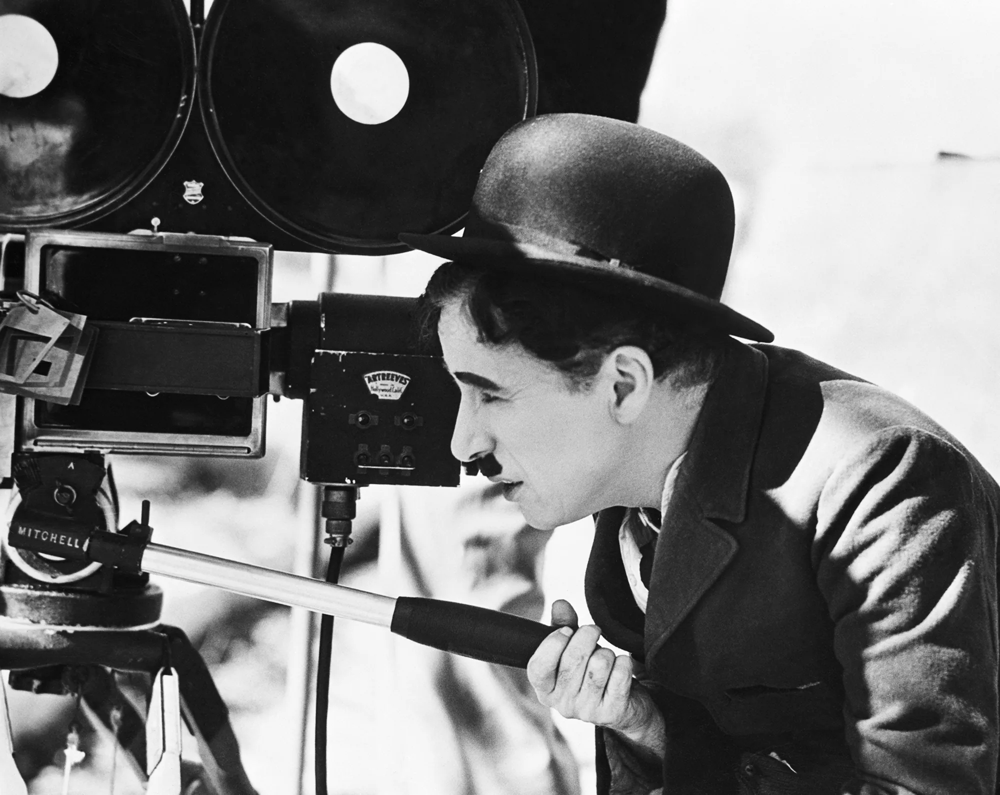

Chaplin's breakthrough came with the creation of his iconic character, "The Tramp." Sporting a bowler hat, toothbrush mustache, and a distinctive walk, The Tramp became a symbol of resilience and humor during the silent film era. Chaplin's ability to convey profound emotions without uttering a word was nothing short of remarkable.
Born on April 16, 1889, in London, England, Charlie Chaplin rose from humble beginnings to become one of the most iconic figures in the history of cinema. His childhood was marked by adversity, as he faced poverty and a challenging family life. Despite these hardships, Chaplin's innate talent for performing soon became apparent.
Charlie Chaplin was not just a gifted performer; he was also a trailblazing filmmaker. He wrote, directed, produced, and starred in his films, showcasing his versatility and creative genius. Some of his most celebrated works include "The Kid" (1921), "City Lights" (1931), and "Modern Times" (1936).
Charlie Chaplin's legacy lives on through the countless lives he touched and the laughter he brought to generations. His contributions to the world of entertainment and his ability to capture the human experience in its many facets make him an immortal figure in the history of cinema.
In the words of Chaplin himself, "To truly laugh, you must be able to take your pain and play with it." Charlie Chaplin did just that, leaving behind a legacy of laughter and profound insight that continues to resonate with audiences around the world.
Read more about Charlie Chaplin on Wikipedia